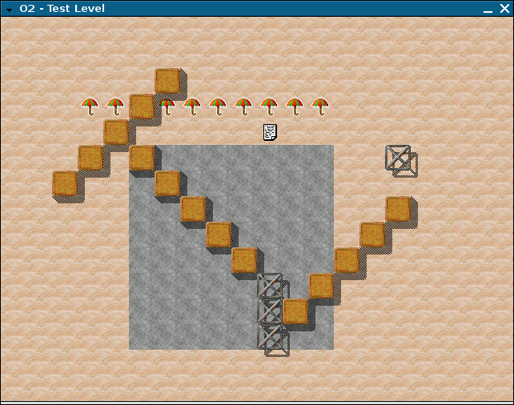
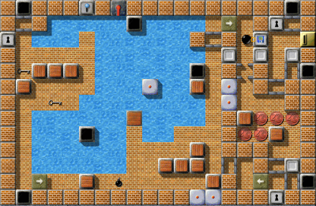
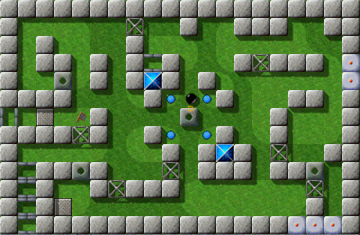
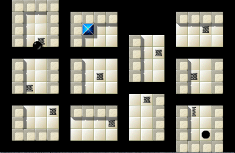
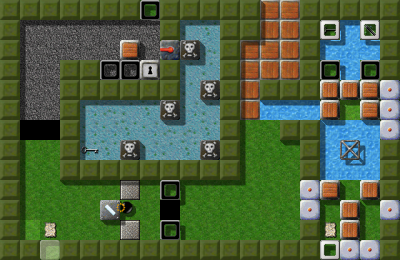
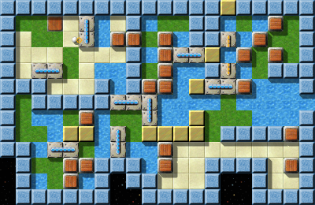
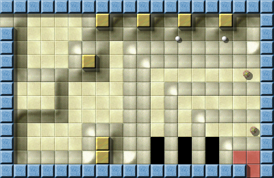
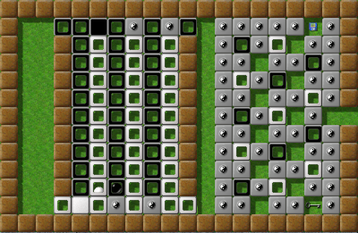
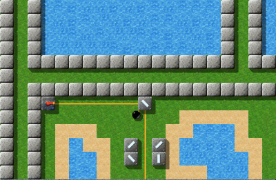

Результаты общих вопросовЧтобы накалить страсти, мы начнем с более общей статистики: всего мы зарегистрировали 741 клик; 73 пользователя и больше 40 ответов на вопрос, что дало нам ясное понимание того, как играют наши профессиональные игроки. А чуть больше половины всех опрошенных выбрали немецкий вариант опроса. Большинство людей (42%) присоединились к Enigma с версии 0.8x. Я помню, что я был одним из них, я нашел Enigma в комплекте с SuSE, поискал в сети и обнаружил, что там уже есть Enigma 0.92. Абсолютное большинство (69%) всех игроков используют Windows 2000 или XP, часто вместе с каким-либо Linux. Самые популярные версии Linux - Debian и Ubuntu. Другой удивительный факт состоит в том, что в два раза больше игроков используют Windows 95/98 или ME (6 из 39), а не Vista (3 из 39). 3 из 39 игроков используют Mac OS («Tiger» 1 vs. «Panther» 2). Один игрок использует (вместе с Windows) абсолютно другую операционную систему, и я все еще гадаю, что это может быть за система … Наконец, 2 из 39 используют dualcore, а 1 использует gp2x. Показатели использования 95/98/ME и Panther дали нам понять, что нам нужно оптимизировать скорость Enigma, чтобы она продолжала одинаково работать даже на компьютерах, которым уже несколько лет, и поэтому нам нужно продожить поддержку для этих систем в следующих выпусках. Очень разными получились ответы на вопрос о сложности уровней. Мы получили 37 ответов на этот вопрос и около половины (16) отмечают, что со сложностью все в порядке. Однако, 9 заявили, что уровни должны быть проще, в то время, как 3 игрока хотят их еще больше усложнить. Мнения о разбросе сложности разделились почти поровну - 8 хотят, чтобы разброс был меньше, 6 говорят, что он должен быть больше. Далее мы узнали любимые типы уровней и здесь сообщество пришло к некоторому согласию: большинство (более 50%) предпочитает небольшие, быстро проходимые уровни-головоломки и уровни, в которых есть новые комбинации и игровые объекты. 38% нравятся большие уровни-приключения, и только меньшинству в 14% хотелось бы увидеть больше уровней на ловкость или уровней с большими, сложными головоломками. 32% хотели бы увидеть больше уровней «других типов» и, к сожалению, я не догадываюсь, что это могут быть за типы. Меня удивил (и несколько порадовал) такой результат, хотя он и показывает, что «Уровень Месяца» не обязательно самый популярный Конечно, все авторы уровней могут свободно создавать их любимые типы уровней - но эта статистика может предложить некоторое направление. Большинство игроков (более 76%) всерьез пытаются решить по крайней мере половину всех уровней. В то же время, только каждый третий из них пытается решить все из них, несмотря на тип! Это очень важная картина для нас, поскольку она может помочь подобрать значения PAR и лучше понять оценки. Все мы знаем важность форума mag-heut.net для сообщества Enigma. Это отражено в ответах на следующий наш вопрос о важности различных источников информации: по шкале оценок от 1 до 5, форум получил в среднем 4.097, за ним следует домашняя страница с результатом 4.059. У других источников важность значительно меньше: список рассылки разработчиков (2.86), личные сообщения (2.75), другие (2.4), уведомление о выпуске новой версии (2.14) и группа oxyd в yahoo (1.58). Это подтвердило наши предположения. Мы также интересовались Вашим мнением о дальнейшем развитии Enigma и попросили Вас оценить несколько тем. Оценить полученные результаты довольно сложно, в частности потому что 9 из 34 голосов не включали в себя ответы по всем темам - но, если обобщить результат, наибольший приоритет у большого количества новых уровней, дальше идут редактор уровней, новые объекты (вспомните, что многие игроки хотят видеть больше уровней для исследования новых объектов и возможностей) и исправление ошибок. Средний приоритет у сетевого режима, сопутствующей информации (включая УМ) и система сохранений при исследовании. Далеко позади оказались просьбы о новой графике и звуках, турнирах и портировании Enigma на другие платформы. Конечно, трудно расставить для тем приоритеты, потому что всего хочется - однако, я считаю эти данные довольно интересными, хотя они окажут и не такое уж большое влияние на наши ближайшие планы. Также мы получили милые, ободряющие комментарии, спасибо Вам всем за них! :-) «Это действительно уровни, выбранные нами, а не кем то со стороны»Следующий комментарий - особый:
Enigma 0.22 была окончена 30 декабря 2001 года: это был небольшой срез
разрабатываемой версии, который я сделал практически за три месяца до
первого публичного выпуска для возможности отката. Основная причина по которой Enigma 0.22
никогда не вышла за пределы моего жесткого диска в том, что она была еще не играбельна: я
еще не начал даже программирование черного мраморного шарика и его взаимодействия с
другими игровыми объектами. Но графика для некоторых игровых объектов вроде динамита, бомб и зонта
уже присутствовала (и не слишком изменилась с тех пор), а еще был единственный ``уровень'', созданный мною
для тестирования. Итак, вот он - Уровень Года 2001:

Уровень Года 2001
Для читателей, интересующихся технической стороной, вот исходный файл этого первого уровня:
(o2-create-world «Test Level» 40 40)
(draw-stones «st-brownie» 5 5 1 1 5)
(draw-stones «st-brownie» 11 11 1 -1 5)
(draw-stones «st-brownie» 2 6 1 -1 5)
(draw-items «it-umbrella» 3 3 1 0 10)
(set-item «it-document» '(10 4) 'text «There's treasure everywhere»)
(fill-floor «fl-sand» 0 0 40 40)
(fill-floor «fl-rock» 5 5 8 8)
(o2-set-actor 12 5 (o2-make-object «ac-blackball»))
(set-stone «st-grate1»
(list 15 5
10 10
10 11
10 12))
Сегодня, почти шесть лет спустя, выбрать Уровень Года не так просто.
Со скромных начинаний Enigma в 2001, число уровней стремительно возросло
до более чем 1000, а решение даже половины из них требует достаточно упорства.
Поэтому некоторые игроки никогда не смогут закончить больше 90% всех уровней и это впечатляет!
Кажется маловероятным, что что-либо изменится: если тенденцию последних шести лет спроецировать на будущее,
то приверженцам Enigma нужно будет решать хотя бы один уровень каждые два дня, только чтобы оставаться
при текущих достижениях…
Уровни, которые выиграли в соревновании этого года очевидно одни из прекраснейших
уровней. Головоломки типа «Найди подходящий ключ» повсеместно используются
в «современных» 3D играх, но Лучший Одноэкранный Уровень показывает
какими они должны быть. В Лучшей Серии Уровней есть два уровня, которые
были среди первых уровней непосредственного взаимодействия с игроком,
издевательства и возражения ему, которые все же принесли довольно специфический игровой
опыт. Победителю в категории Лучшее Оформление подходит следующая характеристика:
сочетание почти эпической истории тайн и приключений, опасных головоломок и замечательного
визуального оформления делает его один из самых сложных и стоящих уровней Enigma всех времен.
Два Самых Забавных Уровня поистине оригинальны, благодаря своей идее перевернуть идею
уровня для «медитации» с ног на голову, а лучший Лучший Инь-Янь Уровень это старый друг:
он был одним из первых уровней, которые использовали объекты Инь-Янь, и до сих пор он остается одним из лучших.
Награда за «Уровень Года 2007» наконец уходит к
непрестанно любимому уровню, созданному одним из мастеров-создателей уровней Enigma.
Это закрученный лабиринт с головоломками, сюрпризами и опасностями и ее решение точно
должно попасть в Вашем списке задач на Новый Год, если его еще там нет…
Награда этого года за Уровень Года - первая в своем роде, и я
искренне надеюсь, что это станет традицией в небольшом, но резонирующем сообществе
Enigma. Творчество дизайнеров уровней Enigma продолжает меня поражать, и я думаю это истинная причина
успеха игры и ее длительной привлекательности. И, не будем обманывать себя:
это действительно уровни, выбранные нами, а не кем-то со стороны.
А вот и они: Лучший Одноэкранный Уровень 2007: «Doors Galore» от Ray Wick Doors Galore, IV/9 «Doors Galore» - один из самых удивительных и «оксидных» уровней в Enigma, использующих обычные объекты новыми и увлекательными способами. С 3.89 из 5 возможных очков, Ray Wick одерживает выдающуюся победу, оторвавшись от «Plan Ahead» (3.59) и «Industrial Puzzles» (3.50). Лучшие Серии Уровней 2007: «Gods of Enigma» от moonpearl Gods of Enigma, V/67

Gods of Enigma II, V/69
Серии уровней «Gods of Enigma» от moonpearl попали в Enigma через форум mag-heut.net и приступила к завоеванию сердец игроков Enigma и абсолютно успешно: С лучшим результатом из всех, 4.23 очка, они превзошли даже необычно высокие результаты «Little Puzzles & Big Adventures» (4.03) и «Seed Puzzles» (3.70).
Лучшее Оформление 2007: «The Aztec Temple» от Dominik Lehmann The Aztec Temple, VI/100 Награды за оформление распределились между тремя гигантами: Уровень Месяца Май 2007, с 4.19 очками, «The Aztec Temple» остановивший «Mountain Climbing» (3.80) и «Solar System» (3.68), и включивший в уровни Enigma новую местность: после космических кораблей, лесов, городов и темных пещер, с этого момента джунгли станут новой возможной декорацией для наших авторов уровней. Самые Забавные Уровни 2007: «Advancing» и «Mountain Climbing» от Joseph Dunne Advancing, VII/23

Mountain Climbing, VII/22
Joseph Dunne сделал двойной удар: его грандиозные уровни «Advancing» и «Mountain Climbing» оба получили 3.786 очков из 5 и, кроме того, показали какой может быть Enigma: уникальный дизайн его уровней отражает мягкость атмосферы этих уровней, образованная некоторой легкостью головоломок. Он перехитрил даже «Diving» (3.55) и «What's the Problem?» (3.52).
Лучший Инь-Янь Уровень 2007: «Teamwork» от Jacob Scott Teamwork, III/18 «Teamwork» самое точное определение Лучшего Инь-Янь Уровня Enigma: этим великим старым уровнем Jacob показал, что на самом деле значат совместные действия, и с 3.83 очками «Teamwork» все еще выказывает уважение своим товарищам «Turnstiles for Two» (3.75) и «Manamana» (3.64). А сейчас, самая важная категория: Уровень Года 2007: «Island Labyrinth» от Jacob Scott! Island Labyrinth, V/100 В конце, на самом деле снова нарастает волнение, когда четыре уровня делают большой прыжок, чтобы стать Уровнем Года 2007: и «Quadropolis», и «Temple of Gold» догнали «The Aztec Temple», а «Houdini», «Labyrinth of Puzzles», «The Aztec Temple» и даже «Temple of Gold» один за другим остались на том же уровне - пять уровней между 9.10 и 9.25! Но в конце, ни один из них не смог соперничать с «Island Labyrinth»: 5 из его 8 оценок - наивысшие 10 очков, одна 9, одна 8 и одна 7, что приносит Jacob Scott бесспорный титул Автора Уровня Года 2007! Заканчивая …Первый раунд наших серий Уровней Месяца теперь забавно завершился тем же, с чего начался в марте 2007: «Island Labyrinth». Вы можете перечитать статью о нем здесь. А теперь время поблагодарить всех тех людей, которые помогали нам с нашими статьями на протяжении года: прежде всего спасибо всем, кто присылал свои комментарии; а именно: Alejandro Lacava, Ronald Lamprecht, Andreas Geldmacher, Hubai András, Tarim, Raoul Bourquin, illmind, Manfredi Carta, Manuel König, Linda Mihalic, Mark Pulley, Lukas Schüller, Shoki, Spioni, Craven, и Daniel Heck. Огромная благодарность Clifford J. Tasner (Taztunes), который проверял каждую статью и помог нам - верите или нет - пятью отзывами! Когда нам нужно больше поддержки он всегда здесь и всегда вовремя. Также большое спасибо Yuriy, который заботится о переводе всех наших статей на русский для наших русских друзей, часто всего за 24 часа, и Joe, который был основным автором июльской статьи. Большое спасибо всем вам! Мы также хотим поблагодарить наших авторов уровней, которые написали 10 огромных уровней, о которых мы имели возможность рассказать на протяжении последнего года, а также тем, кто присылал нам свои отзывы для статей: спасибо, Jacob Scott, Manuel König, Dominik Lehmann, Ronald Lamprecht, Barry и Lori Mead, Johannes Laire, Raoul Bourquin и Jon 'WB' Sneyers. И спасибо основателю проекта Enigma, Daniel Heck, так же как и Meinolf Schneider, который дал жизнь Esprit и Oxyd, нашем постоянным вдохновителям. Текущую статистику наших десяти УМ Вы можете найти в архиве УМ, а точные результаты опроса скоро будут опубликованы здесь. Счастливого новогоднего уровня, |